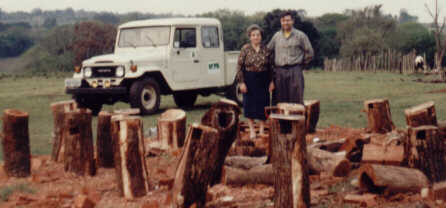

|
 Apoio Apoio |

|
|
|
Apoio |
|
 |
|
 |

| >=> ter uma tampa móvel para facilitar a observação do seu interior, fotos, etc., e causar nestas operações um mínimo impacto aos seus ocupantes; |
| >=> leves, para facilitar a instalação; |
| >=> resistentes às intempéries por diversos anos; |
| >=> ficar inserido de forma harmônica no conjunto de galhos grossos ao ser instalado em árvore sadia, resistente e de bom porte; |
| >=> de fácil construção; |
| >=> barato; |
| >=> constituído de matéria prima abundante; |